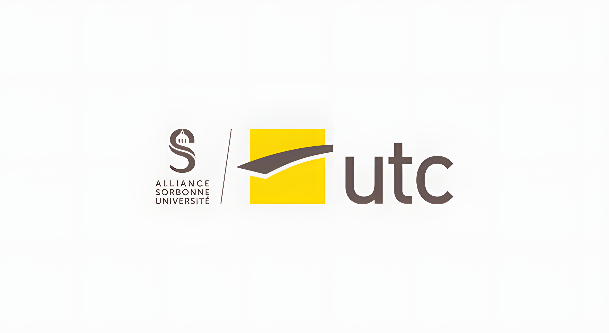
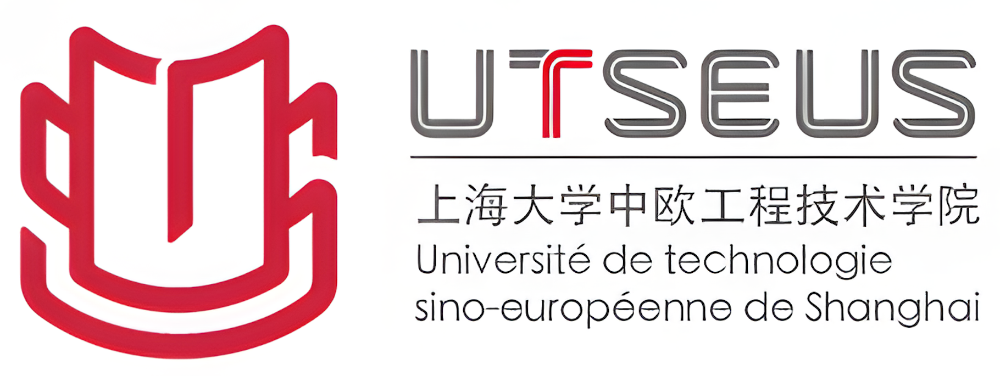

Diplôme d’ingénieur en mécanique
Université de Technologie de Compiègne (UTC)
Dominantes : simulation, dimensionnement et conception. Semestre international à Shanghai, UTSEUS.
Université de Technologie de Compiègne ↗UTSEUS ↗